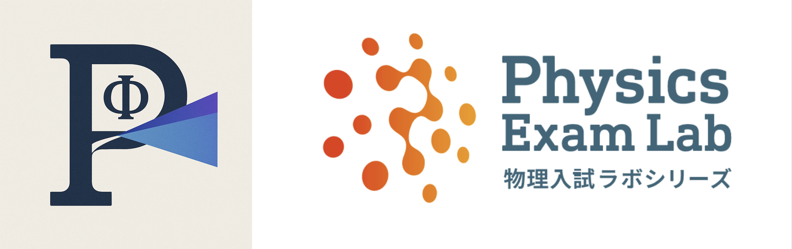

🎤 録音＋発音（同時記録）
種類
理想パルス
短いホワイトノイズ
オシレーター
発音長さ(ms)
音量
⚙ オシレーター設定（録音＋発音）
波形
正弦波
矩形波
三角波
のこぎり波
周波数(20–600Hz)
振動数（周波数）
※ 種類が「オシレーター」のときに使用します（表示は常時）。
事前待機(ms)
事後(ms)
▶ 録音→発音→停止
録音結果を表示
左クリック＝マーカー／右ドラッグ＝ズーム／右クリックorダブルクリック＝ズーム解除。軸はズームに追従。
🔴 録音（手動）
⏺ Start
💾 Save
🔊 発音（単独）
Pulse
Noise
長さ(ms)
音量
🎵 オシレーター（単独）
ステレオモード（デフォルトOFF）
波形
正弦波
矩形波
三角波
のこぎり波
周波数(20–600Hz)
振動数（周波数）
左チャンネル
ON
波形
正弦波
矩形波
三角波
のこぎり波
周波数(20–600Hz)
振動数（周波数）
右チャンネル
ON
波形
正弦波
矩形波
三角波
のこぎり波
周波数(20–600Hz)
振動数（周波数）
ビート周波数：
—
Hz
音量
▶ Start
⏹ Stop
表示 / スケール
Waveform
FFT
⤢ Fullscreen
軸表示
波形を自動正規化
入力ゲイン
表示スケール（最大値）
1.00
時間窓(秒)
周期基準表示
表示周期数
⏱ トリガー（周期固定＋平均）
トリガーモード
トリガーレベル
0.00
平均化周期数
1 周期
上昇エッジ基準で位相固定。平均化でノイズ低減。
📏 マーカー計測（音速）
Waveform表示時：左クリックで A/B。ダブルクリックでリセット。
A(s)
B(s)
Δt
距離 L(m)
往復倍率
×1
×2
×4
速度 v = 距離/Δt
🎙 入力デバイス
⟳
📝 ログ
Oscillo Lab. 
SR:
—
Hz · FFT:
—